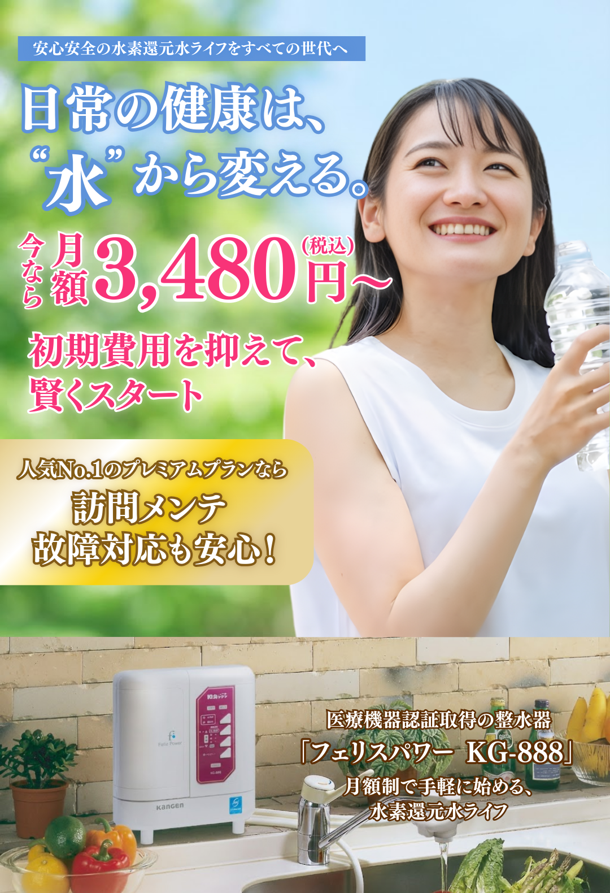
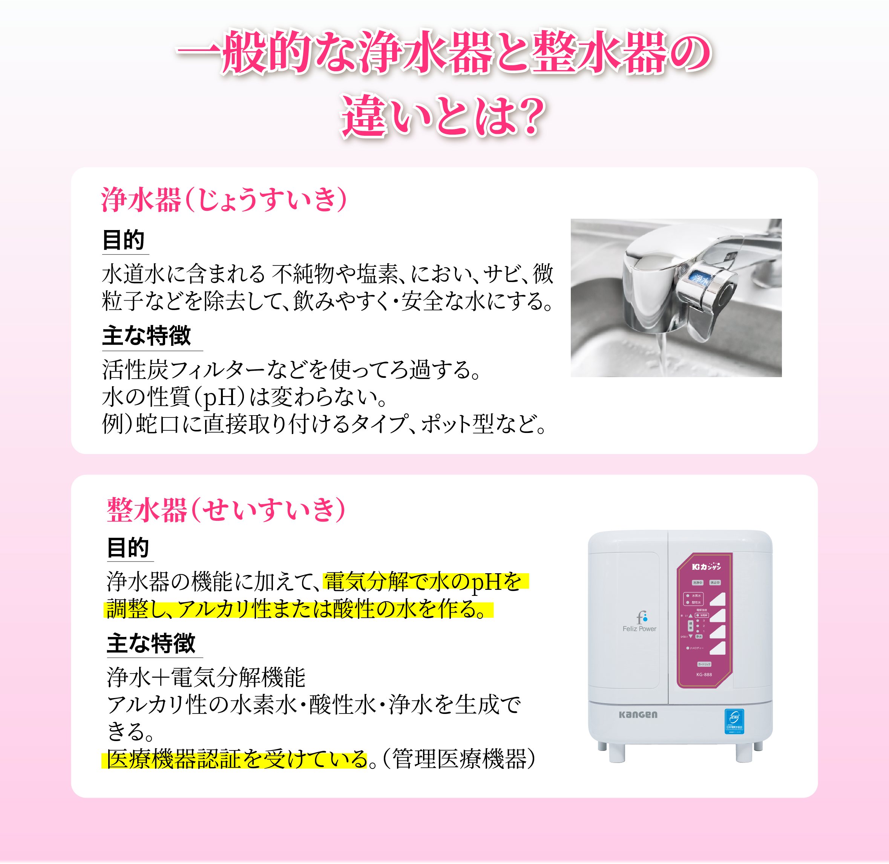
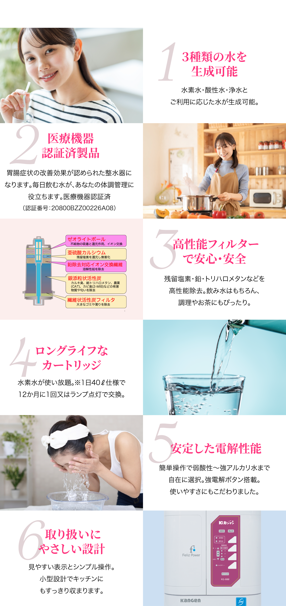
ご家族のライフスタイルやご予算に合わせて、
最適なプランをお選びいただけます。
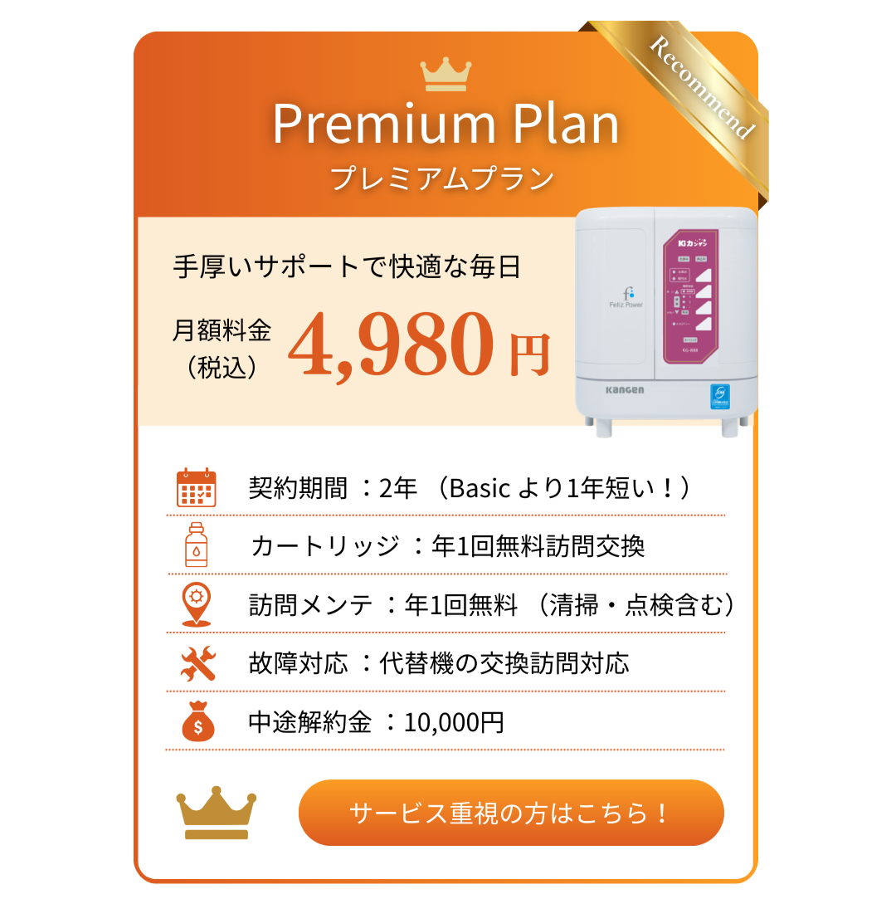
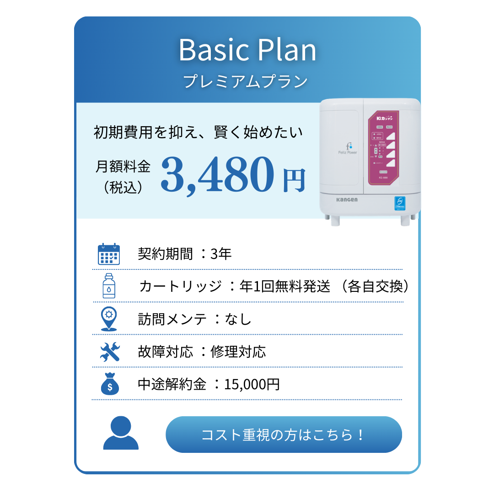
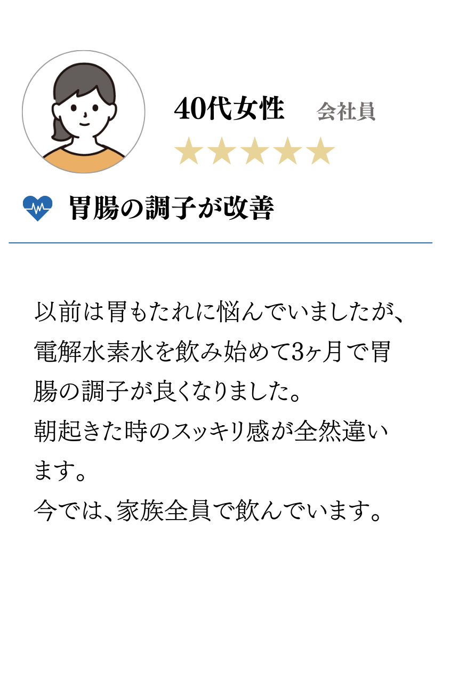
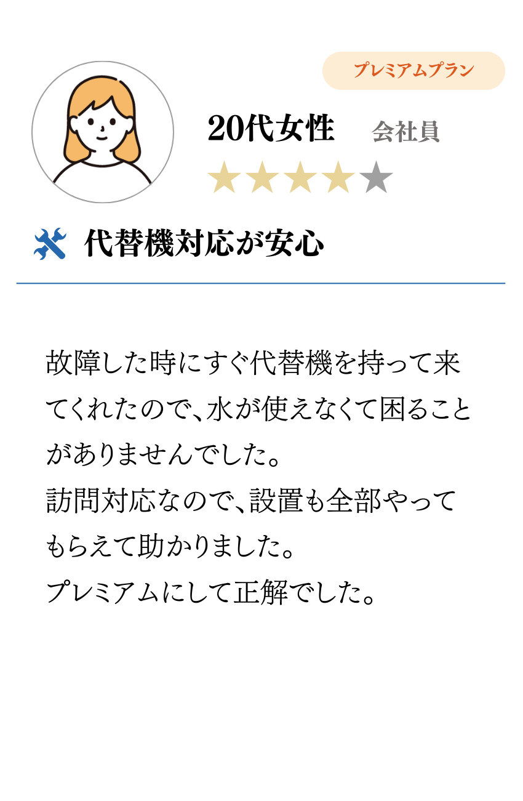
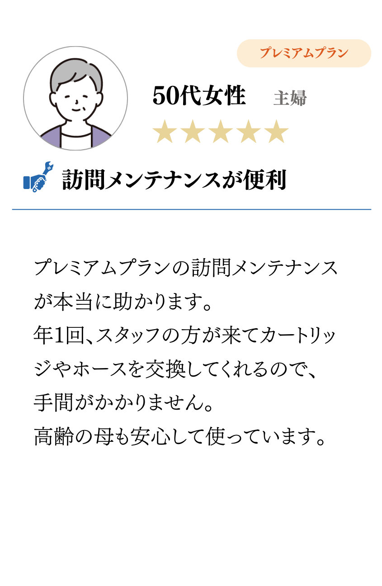
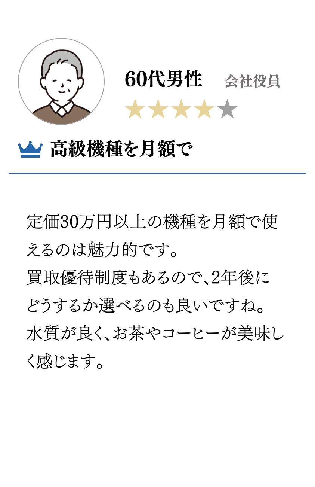
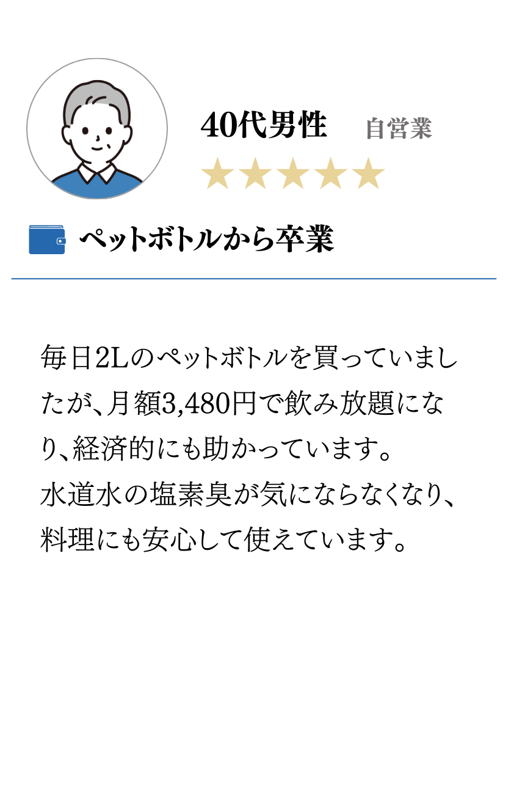
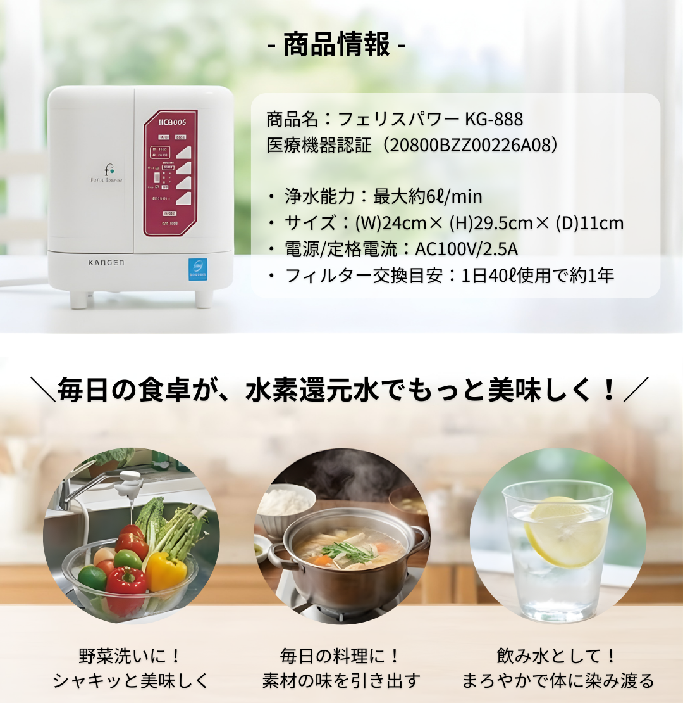
導入後も、使い方のご相談から
メンテナンスまで丁寧にサポートいたします。
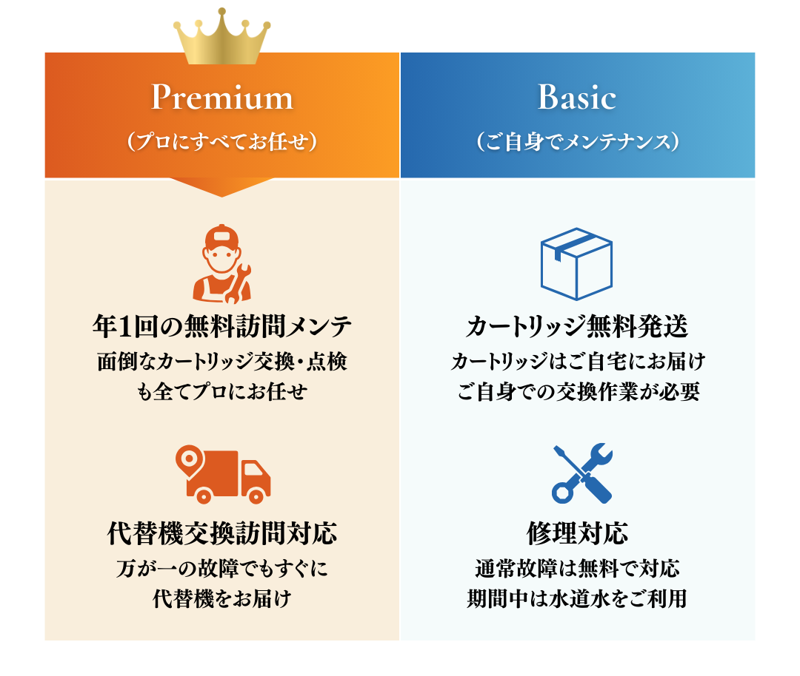
浄水後に電気分解して発生した水素を含んだアルカリ性の飲用可能なお水です。胃腸症状の改善効果が認められている家庭用管理医療機器になります。
洗顔や入浴などがおすすめです。また、うどんやそうめんの茹で水にすると腰が強く仕上がります。ほかにも切花用の水に使用すると花に良い影響があるといわれております。
「浄水モード」にしてご利用ください。
整水をご利用の際は40度以下のお水でご利用ください。
使用量により異なりますが、30～40円程度となります。
フリーダイヤル0120-987-007（受付対応時間・平日8:00～18:00 土日祝8：00～14：00）にお問い合わせください。
購入後3カ年となります。